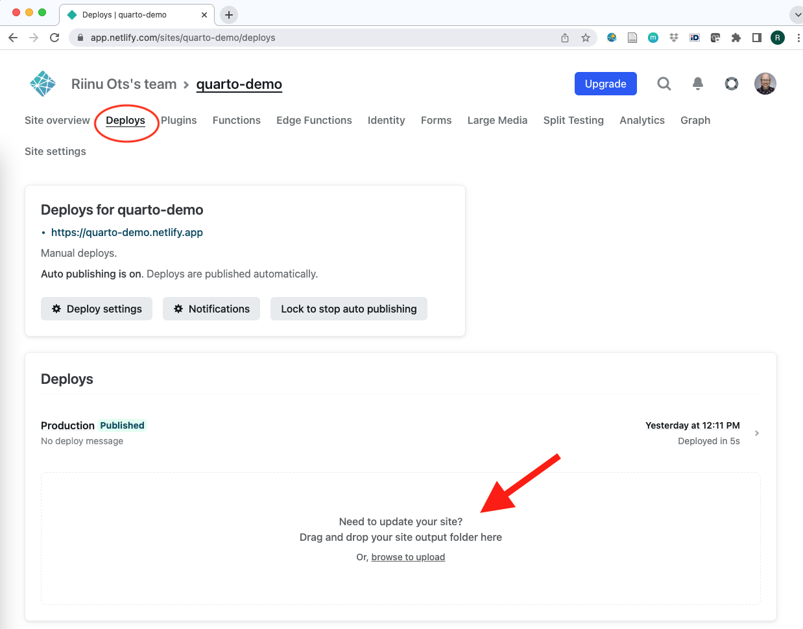

Task: Update your website
Instructions
- Edit your website in RStudio. Click Render.
- In Netlify - Deploys - Drag and drop
_sitefolder to the update area:

Optional advanced: automatic deploys via GitHub
If this is the first time you’re using git on your computer, do these things:
Install git: https://git-scm.com/downloads
Create a GitHub account if you don’t have one already: https://github.com/
RStudio, Tools, Global Options, Git/SVN, Create SSH Key.
Copy the key over to your GitHub account Settings.
Back in RStudio, run these lines in the Shell/Terminal (also under Tools):
git config --global user.email "your@email.com"
git config --global user.name "username"
Push your Quarto website project from RStudio to GitHub. Hint: Create a new repository on GitHub first.
Make your Netlify automatically update your website when you push to GitHub.
Netlify, Site settings, Build & deploy, Link repository.
Publish directory: `_site`.
Test that it works by editing your website in RStudio, render, commit, push. Tip: for committing multiple files, `git add .` in the Terminal is convenient. It does the same thing as manually ticking everything in the Git tab.
Bonus tasks
Get the person sitting next to you to edit your website.
RStudio - New Project - Version Control - URL is your GitHub repository.
Their Push will become a pull request.
You should merge the pull request to main. Your website should then update.
Fabricate a merge conflict. Solve it.